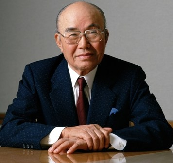

|  |
জীবনযুদ্ধে জয়ী এক সৈনিকের নাম সইচিরো হোন্ডা- যিনি বারংবার ব্যার্থতার পর ও সফল হওয়ার স্বপ্ন দেখেছেন। ছোটবেলা থেকে কলকব্জা নিয়ে কাজ করতে ভালোবাসতেন তিনি। মাত্র পনেরো বছর বয়সে বাড়ি থেকে বের হয় যান হোন্ডা অথচ তার কোন প্রাতিষ্ঠানিক শিক্ষা ছিল না। চলে যান রাজধানী শহর টোকিওতে এবং কাজ নেন একটি গ্যারেজে যেখানে কলকব্জা পরিষ্কার ও মালিকের বাচ্চাদের দেখাশোনা করতেন তিনি। ইচ্ছে ছিল টয়োটা কোম্পানিতে ইঞ্জিনিয়ার হিসেবে যোগদান করবে কিন্তু সাক্ষাতকারের পর চাকরিটা আর কপালে জোটেনি। তাই বলে তিনি থেমে যায়নি। নিজ ঘরে বাসেই বানাতে শুরু করেন স্কুটার। চেষ্টার ত্রুটি না করে রাতের পর রাত নিরলস পরিশ্রম করে যান এবং ১৯৪৬ সালে তৈরি করেন মোটরচালিত সাইকেল এবং ১৯৪৮ সালে প্রতিষ্ঠা করেন “হোন্ডা মোটর কোম্পানি”। শ্রম ও সাধনার বদৌলতে এ কোম্পানি হয়ে উঠে বিশ্ববিখ্যাত হোন্ডা কোম্পানি। সফলতা তাকে দারুণভাবে বরণ করে নেয়।
|
চীনের ব্যবসায়ী, আলিবাবার প্রতিষ্ঠাতা জ্যাক মা সারা পৃথিবীর ব্যবসায়ী ও উদ্যাক্তাদের কাছে এক অনুপ্রেরণার নাম, আদর্শের নাম। প্রশ্ন হলো জ্যাক মা কি রাতারাতি সফল হয়েছেন? না, রাতারাতি সফল হননি। তাঁর সফলতার পেছনে রয়েছে ব্যর্থতার করুণ কাহিনী। তিনি বার বার ব্যর্থতায় পর্যবেশিত হয়েছেন কিন্তু কখনো ভেঙ্গে পড়েননি, সফলতার অদম্য ইচ্ছা নিয়ে হেঁটে গিয়েছেন দুর্গম পথে। চীনের জাতীয় কলেজে ভর্তির জন্য উত্তীর্ণ হতে সময় লেগেছে তিন বছর। যেখানে বছরে মাত্র একবার সুযোগ দেয়া হয়, সেখানে জ্যাক মার লেগেছে তৃতীয় চান্স। হাভার্ডে ভর্তির জন্য আবেদন করেছেন দশবার কিন্তু প্রতিবারই তাকে প্রত্যাখাত হতে হয়েছে।হোঁচট খেতে হয়েছে চাকুরী বাজারেও। ছোট বড় প্রায় ত্রিশটি কোম্পানিতে আবেদন করেও কোন সুফল আসেনি। বরাবরের মত প্রত্যাখাত হতে হয়েছে। পুলিশের চাকুরীতে আবেদন করেও ব্যর্থ হয়েছেন এমনকি তার শহরে কেএফসি চালু হলে সেখানেও আবেদন করে ব্যর্থ হয়েছেন। আলিবাবার সফলতার আগে আরো দুটো উদ্যেগে খুব খারাপ ভাবে ব্যর্থ হন। তবুও তিনি হাল ছাড়েননি। সফলতার স্বপ্ন দেখেছেন দিনের পর দিন। তাইতো আলিবাবা বর্তমানে বিজনেস টু বিজনেস, বিজনেস টু কাস্টমার, কাস্টমার টু কাস্টমার সার্ভিস দেয়া কয়েকশত বিলিয়ন ডলারের কোম্পানিতে পরিণত হয়েছে। ফোর্বসের “রিয়েল টাইম নেট ওর্থ” এর হিসাব অনুযায়ী জ্যাক মার বর্তমান সম্পত্তির পরিমাণ প্রায় চৌত্রিশ বিলিয়ন ডলার।
মাইক্রোসফটের প্রতিষ্ঠাতা বিল গেটস একাধারে তেরো বছর ধরে পৃথিবীর সর্বোচ্চ ধনী ব্যক্তি ছিলেন। পড়াশোনার পাঠ শেষ করতে না পারা বিল গেটস কিভাবে শ্রেষ্ঠ ধনী ব্যাক্তিতে রূপান্তরিত হয় তা নিশ্চয় ভাববার বিষয়। হাভার্ড ছেড়ে তিনি শুরু করেন ব্যবসা। তবে সফল হতে পারেননি প্রথম ব্যবসা “ট্রাফ ও ডাটাতে”। তাতে ভেঙ্গে পড়েননি তিনি বরং আরো দ্বিগুণ উতসাহ ও উদ্দীপনা নিয়ে শুরু করে মাইক্রোসফট নামে নতুন প্রতিষ্ঠান। মাইক্রোসফট শুরু করার পর থেকে তাকে আর পিছে ফিরে তাকাতে হয়নি।
খাবারের জনপ্রিয় ব্রান্ড কেএফসির কথা কে না জানে! এও সবাই জানে কেএফসির প্রতিষ্ঠাতা হারল্যান্ড ডেভিড স্যান্ডার্স একজন সফল ব্যক্তি। কিন্তু তার সফলতার পেছনের গল্প জানা আছে কি? বার বার ব্যর্থ হয়েছেন ডেভিড স্যানডার্স। তিনি রেলওয়ের শ্রমিক হিসেবে কাজ করেন, কাজ করেন বীমাকর্মী হিসেবে, কিন্তু কোন কিছুতেই মন বসেনি তার। ১৯২০ সালে নিজের কিছু জমানো টাকা দিয়ে বোট কোম্পানি খোলেন তারপর যোগ দেন ইন্ডিয়ানার চেম্বার অব কমার্সে। সেখানেও মন বসেনি তার। ওখানে চাকুরী ছেড়ে দিয়ে কেন্টাকিতে একটি টায়ার নির্মানকারী প্রতিষ্ঠানে সেলসম্যানের কাজে নিযুক্ত হন। কিন্তু সেই কোম্পানি বন্ধ হয়ে যায় ১৯২৪ সালে। তারপর কেন্টাকির স্ট্যান্ডার্ড অয়েল কোম্পানির ম্যানেজারের সাথে পরিচয়ের সুবাদে একটি সার্ভিস স্টেশনে চাকুরি পান তিনি। কিন্তু কথায় আছে না অভাগা যেদিকে যায় সাগর শুকিয়ে যায়। ঐ কোম্পানিটাও দেউলিয়া হয়ে গেল ১৯৩০ সালে। চল্লিশ বছর বয়সে বেকার হয়ে পড়েন হারল্যান্ড ডেভিড স্যান্ডার্স। তবুও থেমে যাননি। স্বপ্ন দেখা বন্ধ করেননি। খাবার তৈরি করে বিভিন্ন প্রতিষ্ঠানের কর্মীদের সরবরাহ করা শুরু করলেন। নানা ঘাত প্রতিঘাত, হুমকি সহ্য করেও টিকে গেছেন।১৯৫২ সালে তিনি বাণিজ্যিকভাবে নিয়ে এলেন তাঁর অনেক সাধনার রেসিপি- ‘কেন্টাকি ফ্রাইড চিকেন’। শেলবিভিলে’তে নতুন একটা রেস্তোরা খুললেন তিনি, যেখানে শুধু ফ্রাইড চিকেনের এই ডিশটাই পাওয়া যাবে। লোকজন হুমড়ি খেয়ে পড়লো নতুন এই আইটেম চেখে দেখতে, সবার পছন্দও হলো। বিক্রি করে কূলোতে পারছিলেন না কর্নেল স্যান্ডার্স, শুরু করলেন বিভিন্ন শহরে কেন্টাকি ফ্রাইড চিকেনের শাখা খোলা, প্রথমে আমেরিকা আর তারপরে বিশ্বজুড়ে ছড়িয়ে পড়তে শুরু করলো কেএফসি। ১৯৫৫-১৯৬৫ এই দশ বছরে চীন, কানাডা সহ বিশ্বের বিভিন্ন দেশে কেএফসি’র প্রায় ছয়শোর বেশি শাখা খোলা হয়েছিল, রমরমা ব্যবসা চলছিল, এতদিনে দেখা দেয়া সাফল্যের তরী চলা শুরু করলো মাতাল গতিতে!
পৃথিবীতে লেখালেখি করে প্রথম বিলিয়নিয়ার বনে যাওয়া লেখিকা জে কে রাউলিং। রাতারাতি জনপ্রিয়তা পাওয়া এ লেখিকার ক্যারিয়ারের শুরুটা মোটেই সহজ ছিল না। প্রথমবার তিনি যখন ‘হ্যারি পটারের’ পান্ডুলিপি নিয়ে একটি প্রকাশনীতে যান প্রকাশনীর মালিক তো হেসেই উড়িয়ে দিয়েছে তাকে এবং তার সৃষ্টিকর্মকে। অন্যের কথায় কান না দিয়ে নিজের উপর বিশ্বাস অটুট রেখে বিভিন্ন প্রকাশনীর দ্বারে দ্বারে পাণ্ডুলিপি নিয়ে হাজির হয়েছেন তিনি। কিন্তু হায়! তেরোজন প্রকাশকের কাছ থেকে প্রত্যাখাত হয়েছেন তিনি। তারপরেও থেমে যায়নি, পুনরায় নব উদ্যমে কাজ করে গেছেন বলেই হ্যারি পটার সিরিজ প্রকাশ হওয়ার পর থেকে সাহিত্য জগতের সর্বোচ্চ আসন থেকে কেউ তাকে সরাতে পারেনি। ১৯৯৭ সালে বই প্রকাশের সাথে সাথেই জনপ্রিয়তার শীর্ষে পৌছে যান এই লেখিকা। সারা পৃথিবী ব্যাপি বইটির মিলিয়ন মিলিয়ন কপি বিক্রি হয়েছে। হ্যারি পটার সিরিজ শুধু বই হিসেবেই সীমাবদ্ধ থাকেনি, তা নিয়ে সিনেমা হয়েছে এবং লাখো মানুষের হৃদয় জয় করেছে জে কে রাউলিং। পেয়েছেন অনেক পুরষ্কারও।